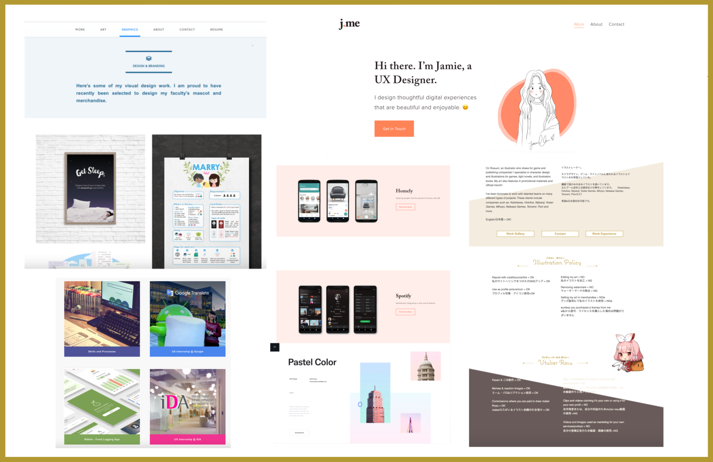
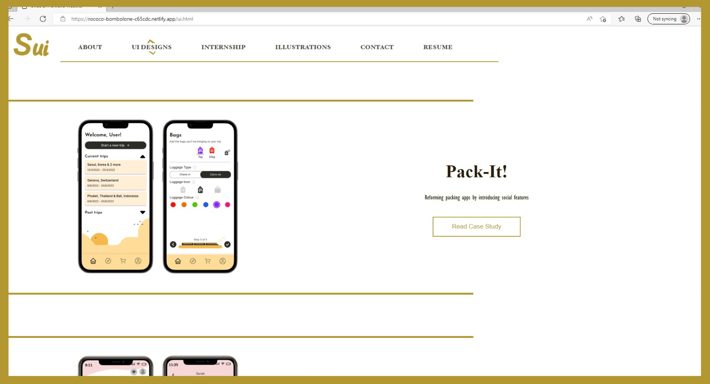
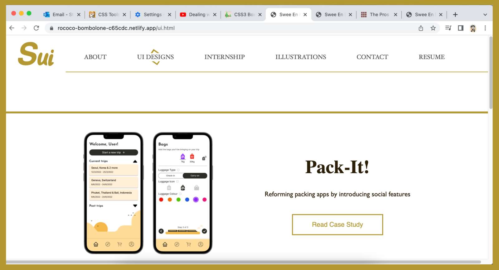

Research
While I wanted to create a portfolio, I was unsure of exactly what goes inside it, or how to present the information.
Hence, I conducted research into the designs of portfolio in general to gain an overview of the aesthetics, then
visited the portfolio of several UI/UX designers to have an understanding of what industry specific elements to take
note of.
After referencing multiple portfolio, I decided on a design language – soft energy, elegant, and clean.
I then compiled all the examples that correspond to the design language for moodboarding.

Wireframing
Once the moodboard was ready, I started to do the wireframing on iPad, where I focused on the placement of
various elements, and the general color scheme.
Building on HTML & CSS
With the wireframe as a guide, I started to translate the ideas into a working prototype. Along the way, I
made some changes to the design for reasons such as consistency as well as minimalism.
The images below shows the wireframe design on the left, and the revised prototype design on the right.
User Testing
Upon completion of the prototype, I hosted it online and began user testing. I received shocking feedback
that there were notable alignment and sizing issues, making the layout look inconsistent. Later on,
I realised that it was an issue with cross browser compatibility.
Even with the same CSS code, certain elements can look vastly different across the various browsers,
browser versions, and even devices.
For instance, between Chrome and Firefox, we can see the different font weights and alignments.

View on Firefox, with bolded navigation headings and misalignment of elements such as the borders and the
title section of the project
View on Chrome, which is how the website is originally supposed to look like

This is due to the different browsers interpreting the codes differently. One of the possible solutions
to this would be to use a CSS reset stylesheet, which reduces browser inconsistencies by resetting the styles
of all elements to a default value. However, this would also mean that there would be no variations in the
styling of words between, for instance, the headings,
body text, and subtitles, etc.
While there are multiple ways to reduce the styling differences across browsers, there is no way
to make the websites look the exact same in each of them. As such, the priority would be to make the website look great on
the latest versions of Chrome and Firefox, and then at least functional in the other browsers.
Although the cross browser compatibility issue could not be resolved completely, I took the remaining feedback
which included comments on the phrasing used, and refined the website even further before finalising it and
linking it from my resume.